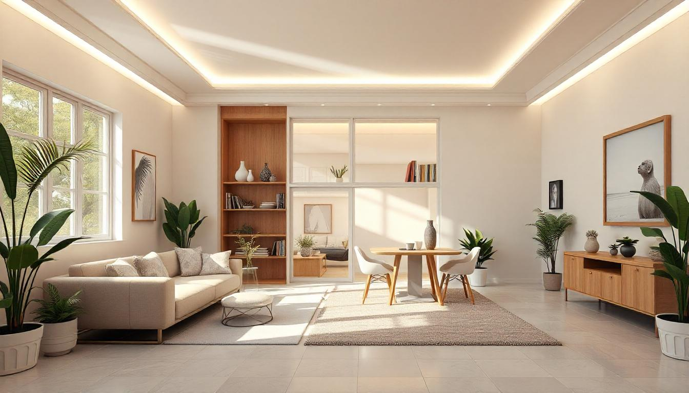

Organização em casa
Quantas vezes você se sentiu estressado e cansado ao ver que sua casa está uma zona?
A organização é um passo fundamental na nossa rotina, sem ela não conseguiríamos colocar ordem em nossa vida e viveríamos em uma bagunça, tanto exterior como no nosso interior, pois a desordem de nossa casa e em tantos outros ambientes reflete no nosso bem estar. Portanto conseguimos observar que quando nossa casa está desorganizada parece que você se sente pesado e mais estressado, diferente de quando a casa está organizada. Por isso é essencial buscarmos a organização em casa e nos ambientes do trabalho e estudo.